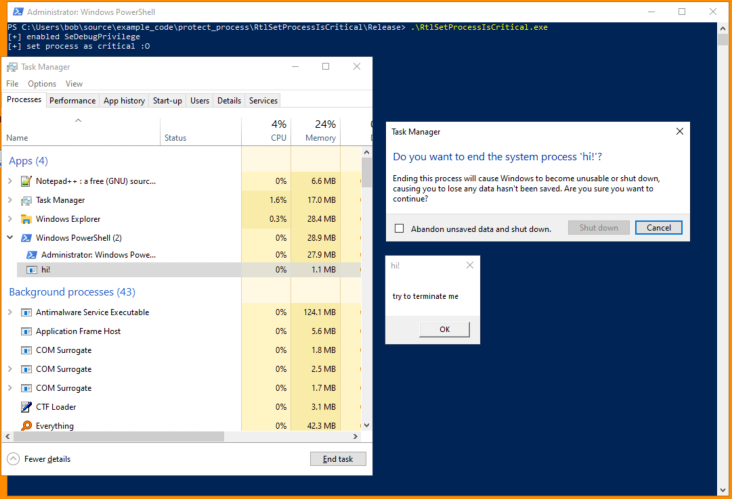
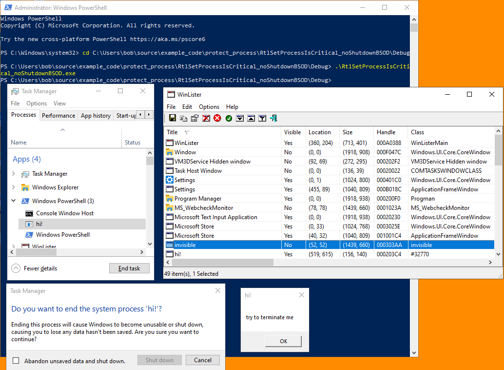

# RtlSetProcessIsCritical
This is an undocumented kernel function.
It sets your process to system critical status, meaning that your process is "critical" to the running of Windows.
If your process is terminated, Windows will terminate too and blue screen.
The advantage of this is that "critical" processes can only be terminated by Admins.
However, if a "critical" process is terminated it causes a BSOD.
This is a fairly noisy error message that you'd probably want to avoid.
Links•
https://www.codeproject.com/Articles/43405/Protecting-Your-Process-with-RtlSetProcessIsCriti•
https://github.com/quasar/Quasar/issues/81## Demo of Simple Version
Running on Windows 10 2004, if the user tries to terminate a critical process they get a message saying that Windows might "become unstable" if we terminate this process.
My user is an Adminstator (which means I can terminate this critical process).
Here I've run my code as Administrator and:
• enabled SeDebugPrivilege
• run RtlSetProcessIsCritical to define my process as critical to the running of windows
• spawned a MessageBox
• and tried to terminate my program via Task Manager
If we check
Abandon unsaved data and shut down, the system will BSOD.
This code MUST BE RUN AS ADMINISTRATOR otherwise the process isn't set to critical.
### Code
RtlSetProcessIsCritical(TRUE, NULL, FALSE) - set process as critical
RtlSetProcessIsCritical(FALSE, NULL, FALSE) - return process to normal
The
SeDebugPrivilege privilege has to be enabled first before
RtlSetProcessIsCritical can be run.
#include <stdio.h>
#include <Windows.h>
typedef NTSTATUS(*t_RtlSetProcessIsCritical)(BOOL bNew, BOOL* pbOld, BOOL bNeedScb);
t_RtlSetProcessIsCritical d_RtlSetProcessIsCritical = NULL;
BOOL EnablePrivilege(char* privilege)
{
BOOL okay = TRUE;
BOOL b_ret = TRUE;
HANDLE h_token = NULL;
LUID luid = { 0 };
TOKEN_PRIVILEGES token_privs = { 0 };
// get access token of current process (which we'll adjust privileges of)
b_ret = OpenProcessToken(GetCurrentProcess(), TOKEN_ADJUST_PRIVILEGES | TOKEN_QUERY, &h_token);
if (b_ret == FALSE)
{
fprintf(stderr, "[-] failed to open process token: %d \n", GetLastError());
okay = FALSE;
goto cleanup;
}
// grab LUID of requested privilege
b_ret = LookupPrivilegeValueA(NULL, privilege, &luid);
if (b_ret == FALSE)
{
fprintf(stderr, "[-] failed to grab LUID of requested privilege: %d \n", GetLastError());
okay = FALSE;
goto cleanup;
}
// enable the privilege
token_privs.PrivilegeCount = 1;
token_privs.Privileges[0].Luid = luid;
token_privs.Privileges[0].Attributes = SE_PRIVILEGE_ENABLED;
b_ret = AdjustTokenPrivileges(h_token, FALSE, &token_privs, sizeof(token_privs), NULL, NULL);
if (b_ret == FALSE)
{
fprintf(stderr, "[-] failed to enable privilege: %d \n", GetLastError());
okay = FALSE;
goto cleanup;
}
cleanup:
if (h_token) CloseHandle(h_token);
return okay;
}
int main(void)
{
BOOL b_ret = FALSE;
b_ret = EnablePrivilege("SeDebugPrivilege");
if (b_ret == FALSE)
return EXIT_FAILURE;
else
printf("[+] enabled SeDebugPrivilege \n");
d_RtlSetProcessIsCritical = (t_RtlSetProcessIsCritical)GetProcAddress(GetModuleHandleA("Ntdll.dll"), "RtlSetProcessIsCritical");
d_RtlSetProcessIsCritical(TRUE, NULL, FALSE);
printf("[+] set process as critical :O \n");
MessageBoxA(NULL, "try to terminate me", "hi!", MB_OK);
return 0;
}
## Demo of Better Version - Disable Critical Status at Shutdown
If our program is running with critical status and the user shuts down the computer, the computer will blue screen. To prevent this, we can watch for
WM_ENDSESSION messages (shutdown messages) being sent to an invisible window we control and disable the critical status of our process when a user tries to shut down the machine. This will prevent a BSOD.
Inspiration:
•
http://www.rohitab.com/discuss/topic/41154-process-persistence/#entry10096806Here I've started a process that spawns a MessageBox asking to terminate me.
• In
WinLister you can see our invisible window -
invisible - which is watching for WM_ENDSESSION messages. (got to Options > Display Invisiable Windows to show it)
• In Task Manager, I've tried to terminate the process. We get a message saying it's critical. If we shut down anyway, the system will blue screen. If we shutdown normally (via start), our code will catch the WM_ENDSESSION message sent to all windows and remove the critical status of our process. Windows will then shut down cleanly.
### Code
/*
Watches for shutdown messages sent to an invisible window it has created.
Upon shutdown message, it deletes its critical status so that Windows will shut down properly without BSOD.
Compile as GUI subsystem.
Run as Administrator to enable SeDebugPrivilege and set process to critical.
*/
#include <stdio.h>
#include <Windows.h>
typedef NTSTATUS(*t_RtlSetProcessIsCritical)(BOOL bNew, BOOL* pbOld, BOOL bNeedScb);
t_RtlSetProcessIsCritical d_RtlSetProcessIsCritical = NULL;
BOOL EnablePrivilege(char* privilege)
{
BOOL okay = TRUE;
BOOL b_ret = TRUE;
HANDLE h_token = NULL;
LUID luid = { 0 };
TOKEN_PRIVILEGES token_privs = { 0 };
// get access token of current process (which we'll adjust privileges of)
b_ret = OpenProcessToken(GetCurrentProcess(), TOKEN_ADJUST_PRIVILEGES | TOKEN_QUERY, &h_token);
if (b_ret == FALSE)
{
fprintf(stderr, "[-] failed to open process token: %d \n", GetLastError());
okay = FALSE;
goto cleanup;
}
// grab LUID of requested privilege
b_ret = LookupPrivilegeValueA(NULL, privilege, &luid);
if (b_ret == FALSE)
{
fprintf(stderr, "[-] failed to grab LUID of requested privilege: %d \n", GetLastError());
okay = FALSE;
goto cleanup;
}
// enable the privilege
token_privs.PrivilegeCount = 1;
token_privs.Privileges[0].Luid = luid;
token_privs.Privileges[0].Attributes = SE_PRIVILEGE_ENABLED;
b_ret = AdjustTokenPrivileges(h_token, FALSE, &token_privs, sizeof(token_privs), NULL, NULL);
if (b_ret == FALSE)
{
fprintf(stderr, "[-] failed to enable privilege: %d \n", GetLastError());
okay = FALSE;
goto cleanup;
}
cleanup:
if (h_token) CloseHandle(h_token);
return okay;
}
LRESULT CALLBACK WindowProc(HWND hwnd, UINT uMsg, WPARAM wParam, LPARAM lParam)
{
switch (uMsg)
{
case WM_QUERYENDSESSION:
d_RtlSetProcessIsCritical(FALSE, NULL, FALSE); // set process as non-critical
return TRUE; // return 1 to WM_QUERYENDSESSION to allow system shutdown
default:
return DefWindowProc(hwnd, uMsg, wParam, lParam);
}
return 0;
}
int WINAPI WinMain(HINSTANCE hInstance, HINSTANCE hPrevInstance, LPSTR lpCmdLine, int nCmdShow)
{
BOOL b_ret = FALSE;
// create window class
HWND hwnd = NULL;
const wchar_t class_name[] = L"invisible";
WNDCLASS wc = { 0 };
wc.lpfnWndProc = WindowProc;
wc.hInstance = hInstance;
wc.lpszClassName = class_name;
RegisterClassW(&wc);
hwnd = CreateWindowW(class_name, L"invisible", WS_OVERLAPPEDWINDOW, CW_USEDEFAULT, CW_USEDEFAULT, CW_USEDEFAULT, CW_USEDEFAULT, NULL, NULL, hInstance, NULL);
ShowWindow(hwnd, SW_HIDE); // hide window
UpdateWindow(hwnd);
// enable SeDebugPrivilege
b_ret = EnablePrivilege("SeDebugPrivilege");
if (b_ret == FALSE)
return EXIT_FAILURE;
// set process as critical
d_RtlSetProcessIsCritical = (t_RtlSetProcessIsCritical)GetProcAddress(GetModuleHandleA("Ntdll.dll"), "RtlSetProcessIsCritical");
d_RtlSetProcessIsCritical(TRUE, NULL, FALSE);
MessageBoxA(NULL, "try to terminate me", "hi!", MB_OK);
return 0;
}